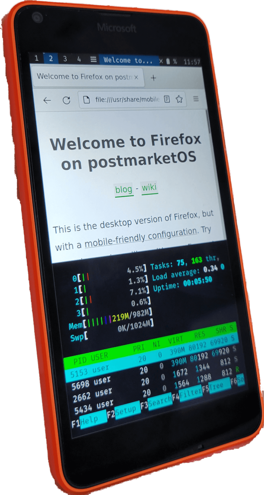

Microsoft Lumia 640 (microsoft-dempsey)
Jump to navigation
Jump to search
|
 Dempsey running sxmo on postmarketOS | |
| Manufacturer | Microsoft |
|---|---|
| Name | Lumia 640 |
| Codename | microsoft-dempsey |
| Released | 2015 |
| Category | testing |
| Original software | Microsoft Windows Phone 8.1 |
| Hardware | |
| Chipset | Qualcomm MSM8926 Snapdragon 400 |
| CPU | Quad-core 1.2 GHz Cortex-A7 |
| GPU | Adreno 305 |
| Display | 720 x 1280 IPS LCD |
| Storage | 8 GB |
| Memory | 1 GB |
| Architecture | armv7 |
| Non-Android based device | ✔ |
{kind=link}
| USB Networking | |
|---|---|
| Flashing | |
| Touchscreen |
Works
|
| Display |
Works
|
| WiFi |
Broken
|
| FDE |
Broken
|
| Mainline |
Works
|
| Battery |
Broken
|
| 3D Acceleration |
Broken
|
| Audio |
Broken
|
| Bluetooth |
Broken
|
| Camera |
Broken
|
| GPS |
Broken
|
| Mobile data |
Broken
|
| SMS |
Broken
|
| Calls |
Broken
|
| USB OTG | |
| NFC |
Works
|
| Accelerometer |
Works
|
|---|---|
| Magnetometer | |
| Ambient Light | |
| Proximity | |
| Hall Effect | |
| Ir TX | |
|---|---|
| TrustZone | |
|
This device is a Windows Phone. See the Windows Phone page for common tips, guides and troubleshooting steps |
Contributors
Users owning this device
- Chaosleo07 (Notes: running mainline)
- FieryFlames (Notes: Single SIM, UK variant)
- Maxnet (Notes: rm-1077)
- Nobodywasishere (Notes: Actually the AT&T LTE model but close enough)
- PEPSIMANTR (Notes: Single SIM LTE variant(RM-1074))
- Ralf1307 (Notes: trying to port edk2 for efiframebuffer via mainline; broke the serial :()
- Rom4nik (Notes: RM-1077)
- WolfLink115 (Notes: RM-1073 AT&T LTE Model)
Current porting status
- Mainline boots and has touch, screen, and side keys working.
- All 4 cores are now up!
- NFC available!
- USB is currently being tested, I can't personally confirm if USB networking is working but someone with a Lumia 735 said it is for them.
- Proximity is working on tesla, just needs testing on dempsey
- WLAN & BT being looked at
Guides (Should work in theory for the other Lumia's specified in the EDK2 port as well.)
Here's a nice guide written by WolfLink115 which explains how to compile/install EDK2 and boot Linux:
- [1] Compiling EDK2
- [2] Installing EDK2
- [3] Booting Linux from eMMC
- [4] If you manage to brick the Lumia 640 (the RM-1073 version, not tested on others!!) into Qualcomm EDL mode, then this guide can help you unbrick it.
See also
Internal links
External links
- [5] Close to mainline linux kernel w/ support for dempsey and a few other msm8x26 lumias on msm8x26 branch. Use msm8x26-touchscreen branch for touchscreen, until it gets committed into msm8x26.
- [6] EDK2 for dempsey, tesla, makepeace and superman. This does boot Linux!
- [7] LittleKernel for tesla and some other lumias. This does not boot Linux!! Useful for chain loading lk2nd to dump regulators when porting a lumia to linux.
- [8] Boot shim used to boot EDK2.